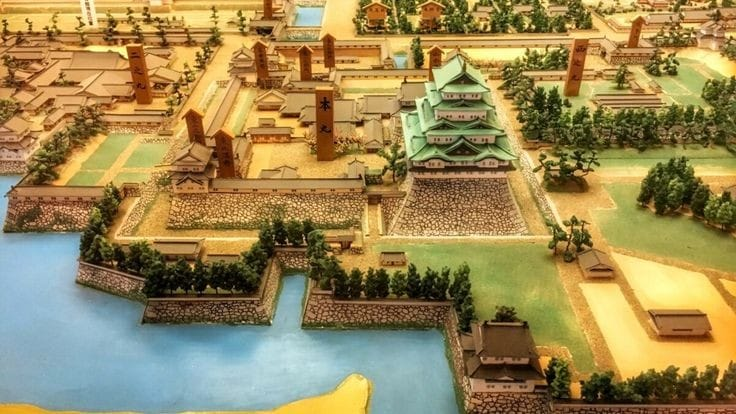
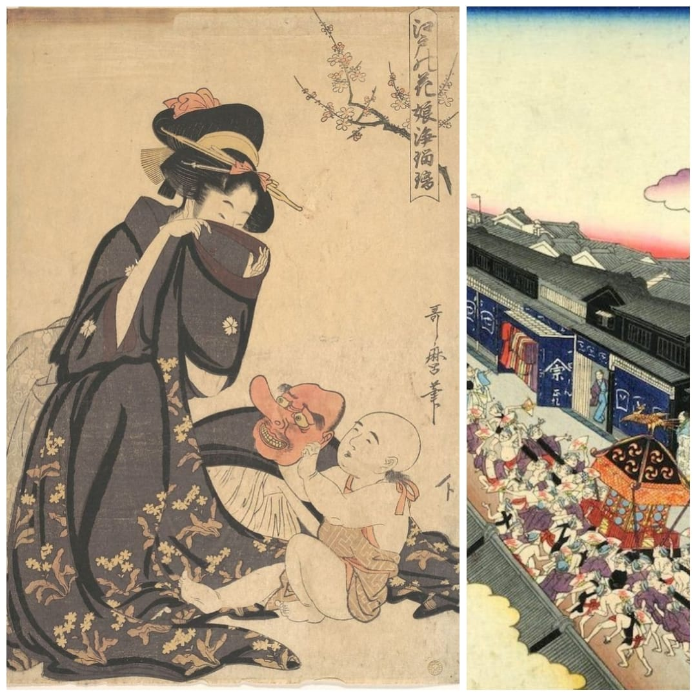

During the Jomon Period (13000 BC to 300 BC), the inhabitants of the Japanese islands were gatherers, fishers and hunters. Jomon is the name of the era's pottery.
During the Yayoi Period (300 BC to 250 AD), the rice culture was imported into Japan around 100 BC. With the introduction of agriculture, social classes started to evolve, and parts of the country began to unite under powerful land owners. Chinese travellers during the Han and Wei dynasties reported that a queen called Himiko (or Pimiku) reigned over Japan at that time. The Yayoi period brought also the introduction of iron and other modern ideas from Korea into Japan. Again, its pottery gave the period its name.
By the beginning of the Kofun Period (250 - 538), a center of power had developed in the fertile Kinai plain, and by about 400 AD the country was united as Yamato Japan with its political center in and around the province of Yamato (about today's Nara Prefecture). The period's name comes from the large tombs (kofun) that were built for the political leaders of that era. Yamato Japan extended from Kyushu to the Kinai plain, but did not yet include the Kanto, Tohoku and Hokkaido.
The emperor was ruler of Yamato Japan and resided in a capital that was moved frequently from one city to another. However, the Soga clan soon took over the actual political power, resulting in a system in which most of the emperors only acted as the symbol of the state and performed Shinto rituals.
During the Asuka Period (538-710), the influence from the mainland increased strongly thanks to friendly relations to the kingdom of Kudara (or Paikche) on the Korean peninsula. Buddhism was introduced to Japan in the year 538 or 552 and was promoted by the ruling class. Prince Shotoku is said to have played an especially important role in promoting Chinese ideas. He also wrote the Constitution of Seventeen Articles about moral and political principles. The theories of Confucianism and Taoism, as well as the Chinese writing system had also been introduced to Japan by then.
In 645, Nakatomi no Kamatari started the era of the Fujiwara clan that was to last until the rise of the military class (samurai) in the 11th century. In the same year, the Taika reforms were realized: A new government and administrative system was established after the Chinese model. All land was bought by the state and redistributed equally among the farmers in a large land reform in order to introduce the new tax system that was also adopted from China.
Nara and Heian Periods (710-1192)
In the year 710, the first permanent Japanese capital was established in Nara, a city modelled after the Chinese capital. Large Buddhist monasteries were built in the new capital. The monasteries quickly gained such strong political influence that, in order to protect the position of the emperor and central government, the capital was moved to Nagaoka in 784, and finally to Heian (Kyoto) in 794 where it would remain for over one thousand years.
One characteristic of the Nara and Heian periods is a gradual decline of Chinese influence which, nevertheless, remained strong. Many of the imported ideas were gradually "Japanized". In order to meet particular Japanese needs, several governmental offices were established in addition to the government system which was copied after the Chinese model, for example. In the arts too, native Japanese movements became increasingly popular. The development of the Kana syllables made the creation of actual Japanese literature possible. Several new Buddhist sects that were imported from China during the Heian period, were also "Japanized".
Among the worst failures of the Taika reforms were the land and taxation reforms: High taxes resulted in the impoverishment of many farmers who then had to sell their properties and became tenants of larger land owners. Furthermore, many aristocrats and the Buddhist monasteries succeeded in achieving tax immunity. As a result, the state income decreased, and over the centuries, the political power steadily shifted from the central government to the large independent land owners.
The Fujiwara family controlled the political scene of the Heian period over several centuries through strategic intermarriages with the imperial family and by occupying all the important political offices in Kyoto and the major provinces. The power of the clan reached its peak with Fujiwara Michinaga in the year 1016. After Michinaga, however, the ability of the Fujiwara leaders began to decline, and public order could not be maintained. Many land owners hired samurai for the protection of their properties. That is how the military class became more and more influential, especially in Eastern Japan.
The Fujiwara supremacy came to an end in 1068 when the new emperor Go-Sanjo was determined to rule the country by himself, and the Fujiwara failed to control him. In the year 1086 Go-Sanjo abdicated but continued to rule from behind the political stage. This new form of government was called Insei government. Insei emperors exerted political power from 1086 until 1156 when Taira Kiyomori became the new leader of Japan.
In the 12th century, two military families with aristocratic backgrounds gained much power: the Minamoto (or Genji) and Taira (or Heike) families. The Taira replaced many Fujiwara nobles in important offices while the Minamoto gained military experience by bringing parts of Northern Honshu under Japanese control in the Early Nine Years War (1050 - 1059) and the Later Three Years war (1083 - 1087).
After the Heiji Rising (1159), a struggle for power between the two families, Taira Kiyomori evolved as the leader of Japan and ruled the country from 1168 to 1178 through the emperor. The major threats with which he was confronted were not only the rivalling Minamoto but also the increasingly militant Buddhist monasteries which frequently led wars between each other and disturbed public order.
After Kiyomori's death, the Taira and Minamoto clans fought a deciding war for supremacy, the Gempei War, which lasted from 1180 to 1185. By the end of the war, the Minamoto were able to put an end to Taira supremacy, and Minamoto Yoritomo succeeded as the leader of Japan. After eliminating all of his potential and acute enemies, including close family members, he was appointed Shogun (highest military officer) and established a new government in his home city Kamakura.
Kamakura Period (1192-1333)
In 1185, the Minamoto family took over the control over Japan after defeating the Taira clan in the Gempei war. Minamoto Yoritomo established a new military government, the Kamakura Bakufu, in Kamakura and was appointed shogun in the year 1192.
After Yoritomo's death in 1199, quarrels for supremacy started between the Kamakura Bakufu and the Imperial court in Kyoto. Those quarrels for supremacy found an end in the Jokyu disturbance in 1221 when Kamakura defeated the Imperial army in Kyoto, and the Hojo regents in Kamakura achieved complete control over Japan. By redistributing the land gained during the Jokyu disturbance, they were able to achieve loyalty among all the powerful people throughout the country. The emperor and the remaining governmental offices in Kyoto lost practically all effective power.
Chinese influence continued to be relatively strong during the Kamakura period. New Buddhist sects were introduced: the Zen sect (introduced 1191) found large numbers of followers among the samurai, which were now the leading social class. Another new Buddhist sect, the radical and intolerant Lotus Sutra sect was founded in 1253 by Nichiren.
In 1232 a legal code, the Joei Shikimoku was promulgated. It stressed Confucian values such as the importance of loyalty to the master, and generally attempted to suppress a decline of morals and discipline. Tight control was maintained by the Hojo clan, and any signs of rebellions were destroyed immediately.
The shogun stayed in Kamakura without much power while deputies of him were located in Kyoto and Western Japan. Stewards and constables controlled the provinces tightly and loyally. Indeed, the Hojo regents were able to bring several decades of peace and economic expansion to the country until an external power began to threaten Japan.
By 1259, the Mongols had conquered China and became also interested in Japan. Several threatening messages of the powerful Mongols were ignored by Kamakura. This resulted in the first Mongol invasion attempt in 1274 on the island of Kyushu. After only a few hours of fighting, however, the large naval invasion fleet, was forced to pull back because of bad weather conditions. This was very fortunate for the Japanese since their odds against the large and modern Mongol force were not favourable at all.
Due to good preparations, the Japanese were able to maintain a strong defence for several weeks during a second invasion attempt which occurred in 1281. But again, the Mongols were finally forced to withdraw mainly because of bad weather. Kyushu remained in alert for a possible third invasion attempt, but the Mongols soon had too many problems on the mainland in order to care about Japan.
The consequences of the many years of war preparations against the Mongols were fatal to the Kamakura government since they resulted only in expenditures and no profits. Many of the loyal men who were fighting for Kamakura, were now waiting for rewards that the government could not pay. Hence, financial problems and decreasing loyalty among the powerful lords were some of the reasons for the fall of the Kamakura government.
By 1333 the power of the Hojo regents had declined to such a degree that the emperor Go-Daigo was able to restore imperial power and overthrow the Kamakura Bakufu
Muromachi Period (1338-1573)
The emperor Go-Daigo was able to restore imperial power in Kyoto and to overthrow the Kamakura Bakufu in 1333. However, the revival of the old imperial offices under the Kemmu restoration (1334) did not last for long because the old administration system was out of date and practice, and incompetent officials failed gaining the support of the powerful landowners.
Ashikaga Takauji, once fighting for the emperor, now challenged the imperial court and succeeded in capturing Kyoto in 1336. Go-Daigo, consequently, fled to Yoshino in the South of Kyoto where he founded the Southern court. At the same time, another emperor was appointed in Kyoto. This was possible because of a succession dispute that had been going on between two lines of the imperial family since the death of emperor Go-Saga in 1272.
In 1338 Takauji appointed himself shogun and established his government in Kyoto. The Muromachi district where the government buildings were located from 1378 gave the government and the historical period their names.
Two imperial courts existed in Japan for over 50 years: the Southern and Northern courts. They fought many battles against each other. The Northern court usually was in a more advantageous position; nevertheless, the South succeeded in capturing Kyoto several times for short time periods resulting in the destruction of the capital on a regular basis. The Southern court finally gave in in 1392, and the country became emperor-wise reunited again.
During the era of Shogun Ashikaga Yoshimitsu (1368 - 1408), the Muromachi Bakufu was able to control the central provinces, but gradually lost its influence over outer regions. Yoshimitsu established good trade relations with Ming China. Domestic production also increased through improvements in agriculture and the consequences of a new inheritance system. These economic changes resulted in the development of markets, several kinds of towns and new social classes.
During the 15th and 16th centuries, the influence of the Ashikaga shoguns and the government in Kyoto declined to practically nothing. The political newcomers of the Muromachi period were members of land owning, military families (ji-samurai). By first cooperating and then surpassing provincial constables, a few of them achieved influence over whole provinces. Those new feudal lords were to be called daimyo. They exerted the actual control over the different parts of Japan, and continuously fought against each other for several decades during the complicated age of civil wars (Sengoku jidai). Some of the most powerful lords were the Takeda, Uesugi and Hojo in the East, and Ouchi, Mori, and Hosokawa in the West.
In 1542 the first Portuguese traders and Jesuit missionaries arrived in Kyushu, and introduced firearms and christianity to Japan. The Jesuit Francis Xavier undertook a mission to Kyoto in 1549-50. Despite Buddhist opposition, most of the Western warlords welcomed Christianity because they were keen in trade with overseas nations mainly for military reasons.
By the middle of the 16th century, several of the most powerful warlords were competing for control over the whole country. One of them was Oda Nobunaga. He made the first big steps towards unification of Japan by capturing Kyoto in 1568 and overthrowing the Muromachi bakufu in 1573.
Azuchi-Momoyama Period (1573-1603)

Oda Nobunaga achieved control over the province of Owari (around the modern city of Nagoya) in 1559. As many other daimyo, he was keen in uniting Japan. Strategically favorably located, he succeeded in capturing the capital in 1568.
After establishing himself in Kyoto, Nobunaga continued to eliminate his enemies. Among them were some militant Buddhist sects, especially the Ikko sect (Pure Land Sect) which had become very powerful in several provinces. Nobunaga destroyed the Enryakuji monastery near Kyoto completely in 1571. His fight against the Ikko sect continued until 1580.
Rather fortunate was Nobunaga concerning two of his most dangerous rivals in the East: Takeda Shingen and Uesugi Kenshin. Both of them died before they were able to confront Nobunaga. After Shingen's death, Nobunaga defeated the Takeda clan in the battle of Nagashino (1575), making use of modern warfare.
In 1582, general Akechi murdered Nobunaga and captured his Azuchi castle. Toyotomi Hideyoshi, a general fighting for Nobunaga, reacted very quickly, defeated Akechi, and took over control. Hideyoshi continued to eliminate remaining rivals. He subdued the Northern provinces and Shikoku in 1583 and Kyushu in 1587. After defeating the Hojo family in Odawara in 1590, Japan was finally reunited.
In order to bring the country under absolute control, Hideyoshi destroyed many castles that were built throughout the country during the era of civil wars. In 1588 he confiscated the weapons of all the farmers and religious institutions in the "Sword Hunt". He forbade the samurai to be active as farmers and forced them to move into the castle towns. A clear distinction between the social classes should increase the government's control over the people. In addition, a land survey was started in 1583, and a census carried out in 1590. In the same year, Hideyoshi's large castle, the Osaka Castle, was completed.
In 1587, Hideyoshi issued an edict expelling Christian missionaries. Nevertheless, Franciscans were able to enter the country in 1593, and the Jesuits remained active in Western Japan. In 1597 Hideyoshi intensified the persecution of Christian missionaries, forbade further conversions, and executed 26 Franciscans as a warning. Foreign traders and missionaries had acted aggressively and intolerant towards native Japanese institutions in an era when their fellow countrymen were conquering and colonizing other parts of the world in the name of Christianity.
After uniting the country, Hideyoshi attempted to realize his rather megalomaniac dream of conquering China. In 1592, his armies invaded Korea and captured Seoul within a few weeks; however, they were pushed back again by Chinese and Korean forces in the following year. Hideyoshi stubbornly didn't give in until the final evacuation from Korea in 1598, the same year in which he died.
Tokugawa Ieyasu, who had been an intelligent partner of Hideyoshi and Nobunaga, succeeded Hideyoshi as the most powerful man of Japan.
Edo Period (1603-1868)

Tokugawa Ieyasu was the most powerful man in Japan after Hideyoshi had died in 1598. Against his promises he did not respect Hideyoshi's successor Hideyori because he wanted to become the absolute ruler of Japan.
In the battle of Sekigahara in 1600, Ieyasu defeated the Hideyori loyalists and other Western rivals. Hence, he achieved almost unlimited power and wealth. In 1603, Ieyasu was appointed Shogun by the emperor and established his government in Edo (Tokyo). The Tokugawa shoguns continued to rule Japan for a remarkable 250 years.
Ieyasu brought the whole country under tight control. He cleverly redistributed the gained land among the daimyo: more loyal vassals (the ones who supported him already before Sekigahara) received strategically more important domains accordingly. The daimyo were also required to spend every second year in Edo. This meant a huge financial burden for the daimyo and moderated his power at home.
Ieyasu continued to promote foreign trade. He established relations with the English and the Dutch. On the other hand, he enforced the suppression and persecution of Christianity from 1614 on.
After the destruction of the Toyotomi clan in 1615 when Ieyasu captured Osaka Castle, he and his successors had practically no rivals anymore, and peace prevailed throughout the Edo period. Therefore, the warriors (samurai) were educating themselves not only in the martial arts but also in literature, philosophy and the arts, e.g. the tea ceremony.
In 1633, shogun Iemitsu forbade travelling abroad and almost completely isolated Japan in 1639 by reducing the contacts to the outside world to strongly regulated trade relations with China and the Netherlands in the port of Nagasaki. In addition, all foreign books were banned. Selected daimyo were also allowed to trade with Korea, the Ryukyu Kingdom and the Ainu in Hokkaido.
Despite the isolation, domestic trade and agricultural production continued to improve. During the Edo period and especially during the Genroku era (1688 - 1703), popular culture flourished. New art forms like kabuki and ukiyo-e became very popular especially among the townspeople.
The most important philosophy of Tokugawa Japan was Neo-Confucianism, stressing the importance of morals, education and hierarchical order in the government and society: A strict four class system existed during the Edo period: at the top of the social hierarchy stood the samurai, followed by the peasants, artisans and merchants. The members of the four classes were not allowed to change their social status. Outcasts, people with professions that were considered impure, formed a fifth class.
In 1720, the ban of Western literature was cancelled, and several new teachings entered Japan from China and Europe (Dutch Learning). New nationalist schools that combined Shinto and Confucianist elements also developed.
Even though the Tokugawa government remained quite stable over several centuries, its position was steadily declining for several reasons: A steady worsening of the financial situation of the government led to higher taxes and riots among the farm population. In addition, Japan regularly experienced natural disasters and years of famine that caused riots and further financial problems for the central government and the daimyo. The social hierarchy began to break down as the merchant class grew increasingly powerful while some samurai became financially dependent of them. In the second half of the era, corruption, incompetence and a decline of morals within the government caused further problems.
In the end of the 18th century, external pressure started to be an increasingly important issue, when the Russians first tried to establish trade contacts with Japan without success. They were followed by other European nations and the Americans in the 19th century. It was eventually Commodore Perry in 1853 and again in 1854 who forced the Tokugawa government to open a limited number of ports for international trade. However, the trade remained very limited until the Meiji restoration in 1868.
All factors combined, the anti-government feelings were growing and caused other movements such as the demand for the restoration of imperial power and anti western feelings, especially among ultra-conservative samurai in increasingly independently acting domains such as Choshu and Satsuma. Many people, however, soon recognized the big advantages of the Western nations in science and military, and favoured a complete opening to the world. Finally, also the conservatives recognized this fact after being confronted with Western warships in several incidents.
In 1867-68, the Tokugawa government fell because of heavy political pressure, and the power of Emperor Meiji was restored.
Meiji Period (1868-1912)
In 1867/68, the Tokugawa era found an end in the Meiji Restoration. The emperor Meiji was moved from Kyoto to Tokyo which became the new capital; his imperial power was restored. The actual political power was transferred from the Tokugawa Bakufu into the hands of a small group of nobles and former samurai.
Like other subjugated Asian nations, the Japanese were forced to sign unequal treaties with Western powers. These treaties granted the Westerners one-sided economical and legal advantages in Japan. In order to regain independence from the Europeans and Americans and establish herself as a respected nation in the world, Meiji Japan was determined to close the gap to the Western powers economically and militarily. Drastic reforms were carried out in practically all areas.
The new government aimed to make Japan a democratic state with equality among all its people. The boundaries between the social classes of Tokugawa Japan were gradually broken down. Consequently, the samurai were the big losers of those social reforms since they lost all their privileges. The reforms also included the establishment of human rights such as religious freedom in 1873.
In order to stabilize the new government, the former feudal lords (daimyo) had to return all their lands to the emperor. This was achieved already in 1870 and followed by the restructuring of the country in prefectures.
The education system was reformed after the French and later after the German system. Among those reforms was the introduction of compulsory education.
After about one to two decades of intensive westernization, a revival of conservative and nationalistic feelings took place: principles of Confucianism and Shinto including the worship of the emperor were increasingly emphasized and taught at educational institutions.
Catching up on the military sector was, of course, a high priority for Japan in an era of European and American imperialism. Universal conscription was introduced, and a new army modelled after the Prussian force, and a navy after the British one were established.
In order to transform the agrarian economy of Tokugawa Japan into a developed industrial one, many Japanese scholars were sent abroad to study Western science and languages, while foreign experts taught in Japan. The transportation and communication networks were improved by means of large governmental investments. The government also directly supported the prospering of businesses and industries, especially the large and powerful family businesses called zaibatsu.
The large expenditures led to a financial crisis in the middle of the 1880's which was followed by a reform of the currency system and the establishment of the Bank of Japan. The textile industry grew fastest and remained the largest Japanese industry until WW2. Work conditions in the early factories were very bad, but developing socialist and liberal movements were soon suppressed by the ruling clique.
On the political sector, Japan received its first European style constitution in 1889. A parliament, the Diet was established while the emperor kept sovereignty: he stood at the top of the army, navy, executive and legislative power. The ruling clique, however, kept on holding the actual power, and the able and intelligent emperor Meiji agreed with most of their actions. Political parties did not yet gain real power due to the lack of unity among their members.
Conflicts of interests in Korea between China and Japan led to the Sino-Japanese War in 1894-95. Japan defeated China, received Taiwan, but was forced by Russia, France and Germany to return other territories. The so called Triple Intervention caused the Japanese army and navy to intensify their rearmament.
New conflicts of interests in Korea and Manchuria, this time between Russia and Japan, led to the Russo-Japanese War in 1904-05. The Japanese army also won this war gaining territory and finally some international respect. Japan further increased her influence on Korea and annexed her completely in 1910. In Japan, the war successes caused nationalism to increase even more, and other Asian nations also started to develop national self confidence.
In 1912 emperor Meiji died, and the era of the ruling clique of elder statesmen (genro) was about to end.
Taisho and Early Showa Period (1912-1945)
During the era of the weak Emperor Taisho (1912-26), the political power shifted from the oligarchic clique (genro) to the parliament and the democratic parties.
In the First World War, Japan joined the Allied powers, but played only a minor role in fighting German colonial forces in East Asia. At the following Paris Peace Conference of 1919, Japan's proposal of amending a "racial equality clause" to the covenant of the League of Nations was rejected by the United States, Britain and Australia. Arrogance and racial discrimination towards the Japanese had plagued Japanese-Western relations since the forced opening of the country in the 1800s, and were again a major factor for the deterioration of relations in the decades preceeding World War 2. In 1924, for example, the US Congress passed the Exclusion Act that prohibited further immigration from Japan.
After WW1, Japan's economical situation worsened. The Great Kanto Earthquake of 1923 and the world wide depression of 1929 intensified the crisis.
During the 1930s, the military established almost complete control over the government. Many political enemies were assassinated, and communists persecuted. Indoctrination and censorship in education and media were further intensified. Navy and army officers soon occupied most of the important offices, including the one of the prime minister.
Already earlier, Japan followed the example of Western nations and forced China into unequal economical and political treaties. Furthermore, Japan's influence over Manchuria had been steadily growing since the end of the Russo-Japanese war of 1904-05. When the Chinese Nationalists began to seriously challenge Japan's position in Manchuria in 1931, the Kwantung Army (Japanese armed forces in Manchuria) occupied Manchuria. In the following year, "Manchukuo" was declared an independent state, controlled by the Kwantung Army through a puppet government. In the same year, the Japanese air force bombarded Shanghai in order to protect Japanese residents from anti Japanese movements.
In 1933, Japan withdrew from the League of Nations since she was heavily criticized for her actions in China.
In July 1937, the second Sino-Japanese War broke out. A small incident was soon made into a full scale war by the Kwantung army which acted rather independently from a more moderate government. The Japanese forces succeeded in occupying almost the whole coast of China and committed severe war atrocities on the Chinese population, especially during the fall of the capital Nanking. However, the Chinese government never surrendered completely, and the war continued on a lower scale until 1945.
In 1940, Japan occupied French Indochina (Vietnam) upon agreement with the French Vichy government, and joined the Axis powers Germany and Italy. These actions intensified Japan's conflict with the United States and Great Britain which reacted with an oil boycott. The resulting oil shortage and failures to solve the conflict diplomatically made Japan decide to capture the oil rich Dutch East Indies (Indonesia) and to start a war with the US and Great Britain.
In December 1941, Japan attacked the Allied powers at Pearl Harbor and several other points throughout the Pacific. Japan was able to expand her control over a large territory that expanded to the border of India in the West and New Guinea in the South within the following six months.
The turning point in the Pacific War was the battle of Midway in June 1942. From then on, the Allied forces slowly won back the territories occupied by Japan. In 1944, intensive air raids started over Japan. In spring 1945, US forces invaded Okinawa in one of the war's bloodiest battles.
On July 27, 1945, the Allied powers requested Japan in the Potsdam Declaration to surrender unconditionally, or destruction would continue. However, the military did not consider surrendering under such terms, partially even after US military forces dropped two atomic bombs on Hiroshima and Nagasaki on August 6 and 9, and the Soviet Union entered the war against Japan on August 8.
On August 14, however, Emperor Showa finally decided to surrender unconditionally.
Postwar Period (since 1945)
After World War II had ended, Japan was devastated. All the large cities (with the exception of Kyoto), the industries and the transportation networks were severely damaged. A severe shortage of food continued for several years.
The occupation of Japan by the Allied Powers started in August 1945 and ended in April 1952. General MacArthur was its first Supreme Commander. The whole operation was mainly carried out by the United States.
Japan basically lost all the territory acquired after 1894. In addition, the Kurile islands were occupied by the Soviet Union, and the Ryukyu Islands, including Okinawa, were controlled by the USA. Okinawa was returned to Japan in 1972, however a territorial dispute with Russia concerning the Kurile Islands has not been resolved yet.
The remains of Japan's war machine were destroyed, and war crime trials were held. Over 500 military officers committed suicide right after Japan surrendered, and many hundreds more were executed for committing war crimes. Emperor Showa was not declared a war criminal.
A new constitution went into effect in 1947: The emperor lost all political and military power, and was solely made the symbol of the state. Universal suffrage was introduced and human rights were guaranteed. Japan was also forbidden to ever lead a war again or to maintain an army. Furthermore, Shinto and the state were clearly separated.
MacArthur also intended to break up power concentrations by dissolving the zaibatsu and other large companies, and by decentralizing the education system and the police. In a land reform, concentrations in land ownership were removed.
Especially during the first half of the occupation, Japan's media was subject to a rigid censorship of any anti-American statements and controversial topics such as the race issue.
The co-operation between the Japanese and the Allied powers worked relatively smooth. Critics started to grow when the United States acted increasingly according to her self interests in the Cold War, reintroduced the persecution of communists, stationed more troops in Japan, and wanted Japan to establish an own self defence force despite the anti-war article in the constitution. Many aspects of the occupation's so called "reverse course" were welcomed by conservative Japanese politicians.
With the peace treaty that went into effect in 1952, the occupation ended. Japan's Self Defence Force was established in 1954, accompanied by large public demonstrations. Great public unrest was also caused by the renewal of the US-Japan Security Treaty of 1960.
After the Korean War, and accelerated by it, the recovery of Japan's economy flourished. The economic growth resulted in a quick rise of the living standards, changes in society and the stabilization of the ruling position of the Liberal Democratic Party (LDP), but also in severe pollution.
Japan's relations to the Soviet Union were normalized in 1956, the ones to China in 1972.
The 1973 oil crisis shocked the Japanese economy which was heavily depended on oil. The reaction was a shift to high technology industries.